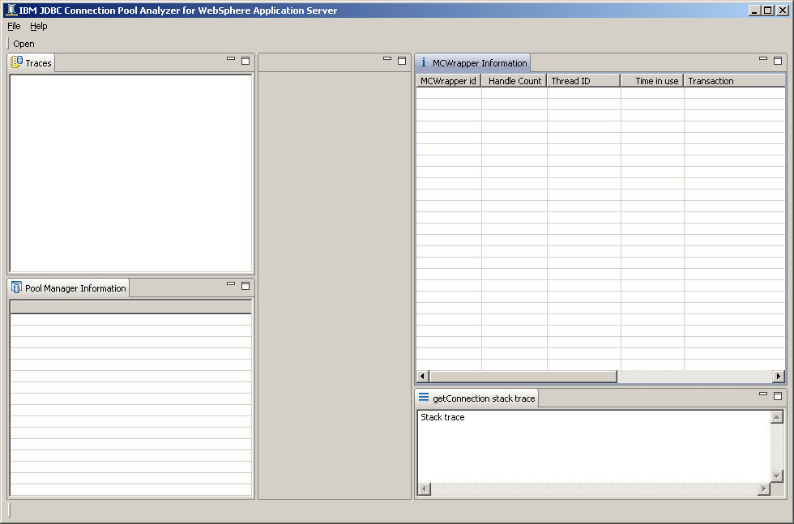

Run jcp executable. jcp.exe for example
If you get Java heap exhaustion due to large trace, please use -vmargs -Xmx option to increase Java Heap.
For example, jcp -vmargs -Xmx1024m will allocate 1 GB of Java heap to the tool environment
If you want to process traces taken from different locale, please specify locale by using -nl or -Duser.language and -Duser.country option when you start the tool. Otherwise, you could encounter date parsing problems or incorrect date and time.
You can find supported locales at http://java.sun.com/javase/6/docs/technotes/guides/intl/locale.doc.html
For example, jcp -nl de_DE will start the tool with German locale in order to parse German trace on non-German machine.
"jcp -vmargs -Duser.language=de -user.country=DE" can be also used to set German locale environment.
The tool requires Java Runtime Environment 5.0 or higher. If your default Java Runtime Environment is not 5.0, please use -vm option to allow the tool to find Java Runtime Environment.
For example, jcp -vm c:\java5\bin\java.exe
The following is the screenshot of the tool
